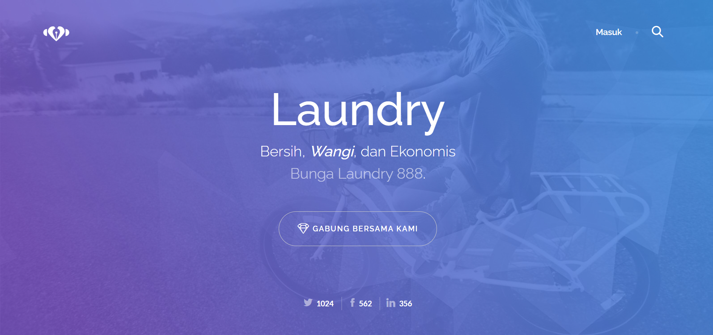
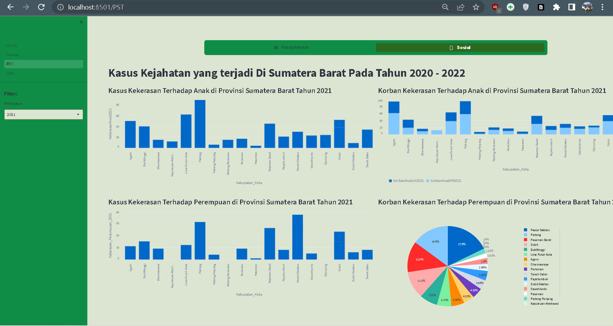
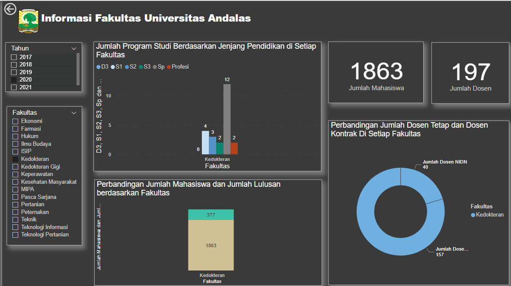
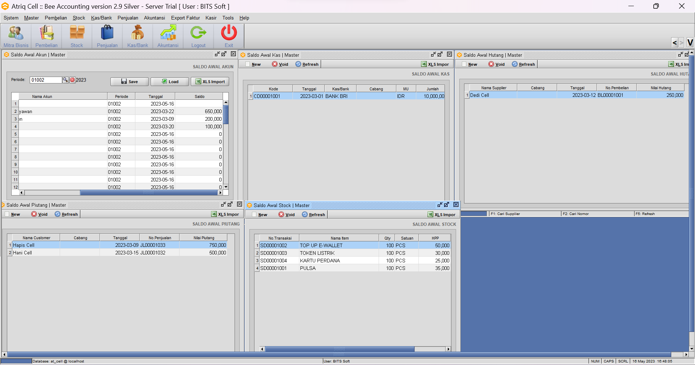
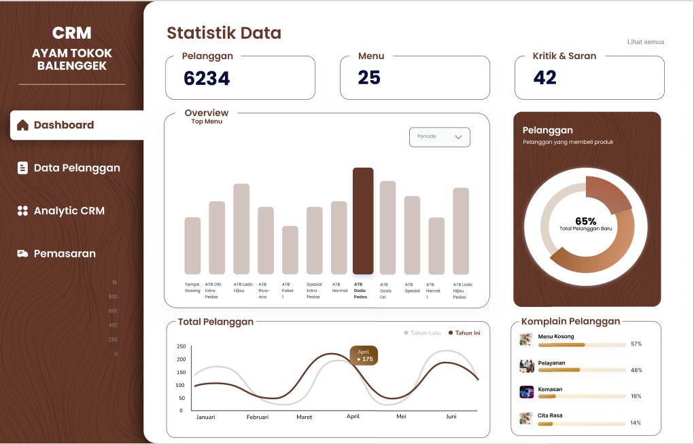
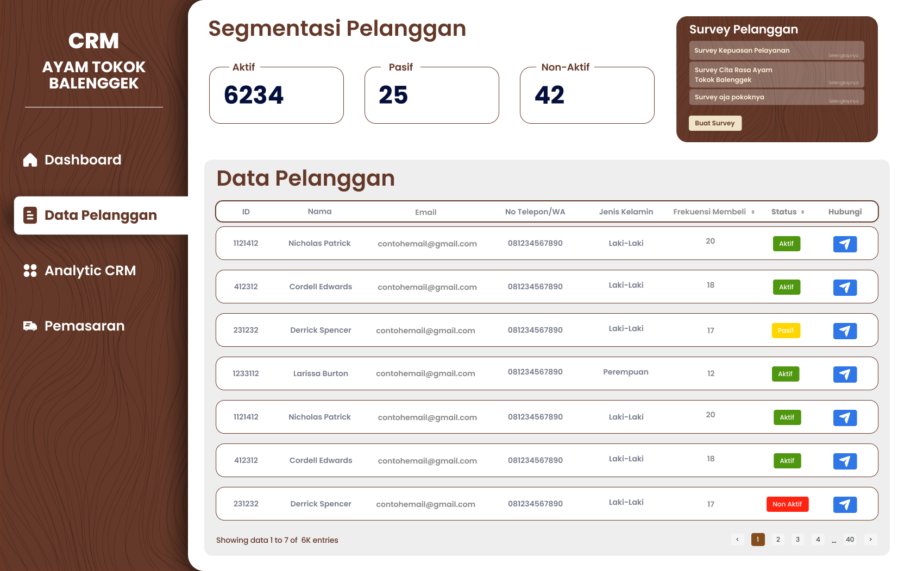
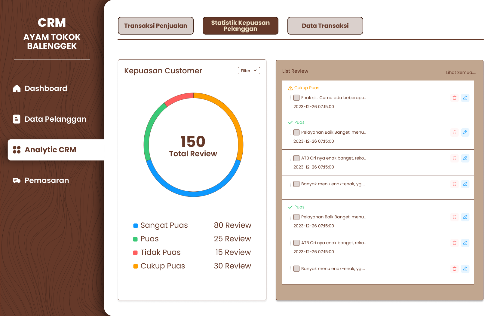
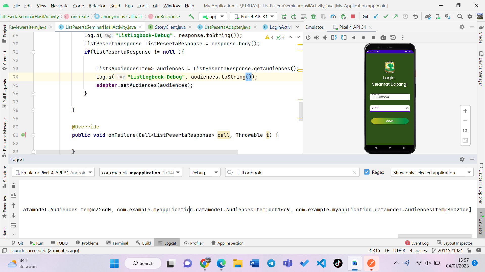
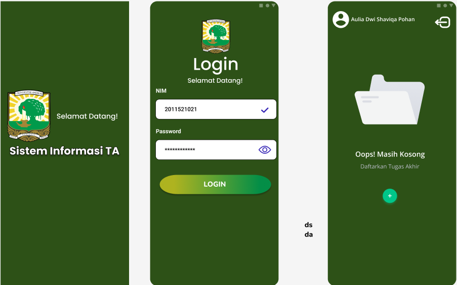
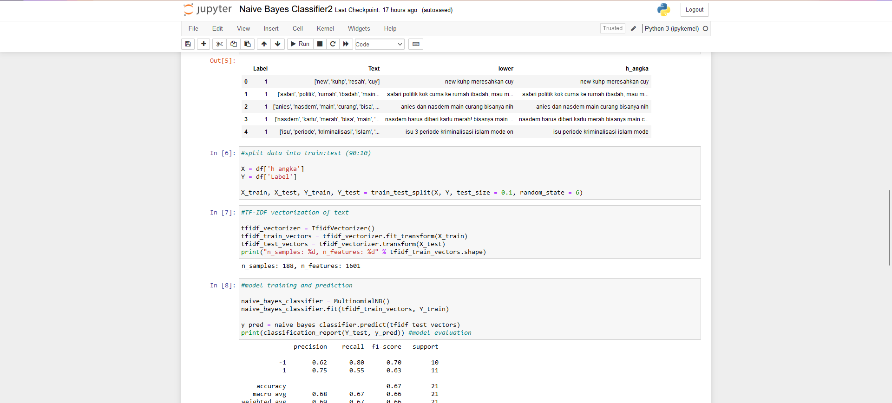

Pembangunan Sistem Informasi Manajemen Transaksi dan Inventory Laundry berbasis Website

Pembangunan Dashboard Business Intelligence Untuk Visualisasi Data Sumatera Barat Dalam Angka

Pembangunan Dashboard Business Intelligence Untuk Visualisasi data Program Studi Universitas Andalas.

Penerapan ERP Bee Accounting Pada Perusahaan Atriq Cell

Pembuatan perancangan UI Aplikasi CRM



Pembangunan Sistem Informasi Manajemen TA berbasis Mobile


Analisis Sentimen Twitter untuk Menilai Opini Publik Terhadap UU KUHP Menggunakan Algoritma Naïve Bayes
Classifier
